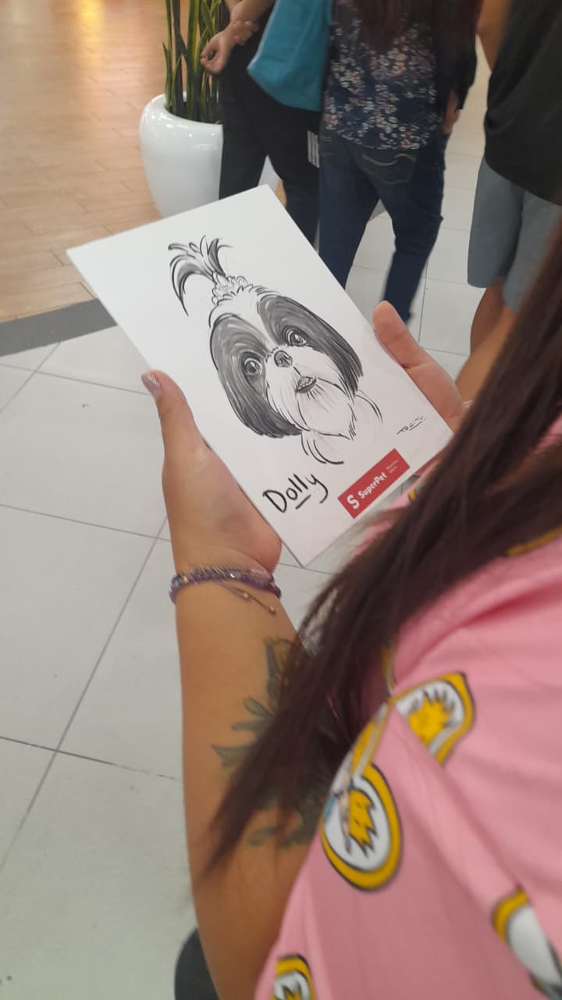

TÚ & YO — dos —
Aniversario · todo este tiempo

el principio

risas

cómplices

siempre
Contigo el tiempo va despacio y a la vez vuela
guardar canción
escanea y llévate nuestra música
8 mil millones de personas, y todavía te elegiría a ti
feliz aniversario
gracias por cada día a mi lado
siempre tuya · siempre tuyo
💜